ЛАБОРАТОРНО-ПРАКТИЧНА РОБОТА
Тема: «Виконання рослинних елементів плоско-рельєфного різьблення. Різьблення стилізованих орнаментів»
Мета: ознайомлення з технікою виконання елементів плоско-рельєфного різьблення (Кудринське різьблення); з технікою виконання рослинних елементів в плоско-рельєфному різьбленні.
Матеріали та інструменти: набір інструментів для плоско-рельєфного різьблення. Заточний і креслярський інструмент.
Порядок виконання роботи:
- Ознайомитись з теоретичними відомостями.
- Підготувати виріб до оздоблення плоско-рельєфним різьбленням.
- Заточити і направити інструмент.
- Користуючись методичними рекомендаціями, виконати на тренувальних дощечках різьблення рослинних і твариннихелементів:
- "ромашка''
- "гладке листя" навколо "ромашки"
- "гілочка із заокругленими листочками"
- "метелик"
Теоретичні відомості:
Основою орнаменту Абрамцево-Кудринського різьблення деревини, є рослинний орнамент у вигляді м'яко загнутих квітів, трав, листя, гілок (мал. 33). Свою назву воно отримало від садиби Абрамцево в селі Кудрино, де виникло наприкінці XIX століття. Одним з творців цієї різьби був майстер В. П. Ворноcков.
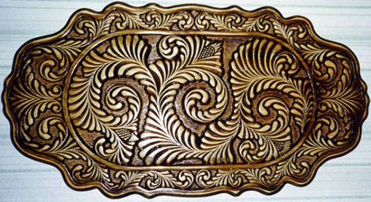
Мал. 33. .Абрамцево - Кудринське різьблення.
Сучасний асортимент виробів включає в себе предмети утилітарного призначення (скрині, сухарниці, цукерниці, сільнички, курильні набори), декоративного характеру – (панно, тарілки та ін), прикрашені рослинним візерунком з характерним пальцеподібним різьбленням.
Для виготовлення виробів майстри використовують деревину липи, рідше – берези. Після токарної або столярної обробки на поверхню виробу наноситься контур майбутнього малюнка. Зазвичай це робиться за допомогою копіювального паперу.
Перша стадія роботи – надрізання. При цьому знімаються шар деревини по контуру малюнка, робота виконується напівкруглою стамескою (або декількома, різної ширини і радіуса). При цьому контур візерунка виходить «рваним», що складається з деякої кількості напівкруглих, нігтевидних кромок.
Це виправляється на наступному етапі– підрізання. Фон вибирається або ножем з довгим лезом, або тими ж стамесками. При цьому отримані кромки згладжують, перетворюючи кілька нігтевидних зрізів у вигнуту гладку лінію. На цьому ж етапі забираються всі задирки, обривки волокон й інше «сміття», що утворилось в результаті надрізання візерунка. Якщо у важкодоступних місцях орнамент не вийшло прорізати стамескою, він дорізається ножем.
Далі йде зняття фасок. Чим більше їх буде, тим більш опуклим і яскравим буде візерунок. Найкращим варіантом є фаска, знята повністю по всьому контуру елемента малюнка (листочка або завитка). Тут же прибираються всі дрібні огріхи роботи, видаляються гострі ребра і кути, різьба як би згладжується, заокруглюється. Для Кудринського різьблення характерний плоский рельєф, який майже цілком закриває фон, скрізь однакової висоти.
Останнім етапом є насічка – тонкі зрізи на опуклих поверхнях, які додають малюнку завершеності і збільшують його рельєфність. Це можуть бути прожилки на листі і пелюстках, сітка на серцевині квітки. Цю частину роботи, як і попередню (зняття фасок), виконують ножем, але іноді використовують самі дрібні напівкруглі стамески для нігтевидних насічок.
Кінцева обробка полягає в шліфовці, тонуванні і нанесенні захисного покриття. Шліфування виконується наждачним папером. Для тонування використовується морилка різних кольорів, зазвичай коричневої гами (для імітації благородних сортів дерева), в якості захисного покриття використовується віск або лак. Цікавий ефект виходить при тонування всієї поверхні темною морилкоюз подальшим повторним шліфуванням виступаючих елементів візерунка (для їх висвітлення ) і покритті лаком тільки виступаючих частин орнаменту. Яскравий блиск опуклих частин малюнка і темні поглиблення підкреслюють різьблений рельєф, гра світла і тіні та блиск полірованих поверхонь надає виробам неповторної принадності.
Особливості та технологія Кудринського різьблення
Кудринське різьблення належить до плоско-рельєфних видів різьблення. Воно має кілька різновидів: різьба з заокругленим контуром, з фоном подушки і з підібраним (вибраним) фоном. Загальне для них – невисокий умовний рельєф, розташований в одній площині на рівні поверхні, що прикрашається. Плоско-рельєфне різьблення є перехідним видом від контурного до рельєфного різьблення.
Що стосується Кудринського, то воно буває з фоном подушки або виборним. Основну декоративну роль у цьому різьбленні відіграють традиційні гірлянди з пелюсток-пальчиків, у вигляді подовжених крапель, що майже сходяться гострими кінцями в гілки. З пальчикових гілок-гірлянд з включенням декоративного листя і завитків, створюється безперервний, пружний потік, який визначає весь ритм і лад композиції, з включенням в проміжки стилізованих квітів, плодів, птахів, звірів і ін.
Композиційна особливість Кудринського різьблення – це основне зображення (сюжетна композиція), оточене текучим потоком рослинного узору, що немов обволікає його дорогоцінною оправою.
Підготовчий малюнок для Кудринського різьблення виконується в натуральну величину. Для цього попередньо з поверхні запланованого виробу знімають на папір лекало. На ньому розробляють майбутній візерунок різьблення. Далі на підготовлену дерев'яну поверхню переводять малюнок олівцем за допомогою копіювального паперу або кальки. Малюнок на декорованій поверхні не повинен бути яскравим – надалі це може ускладнити обробку готового виробу (мал. 34).
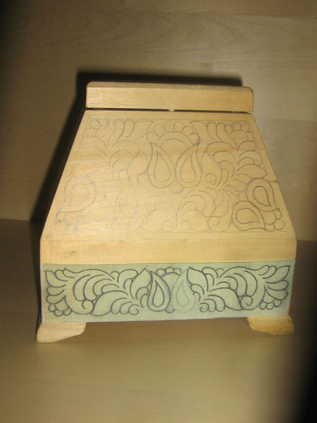
Мал. 34. Нанесення композиції на поверхню виробу.
Різьблення виконується напівкруглими стамесками з шириною полотна 3-25 мм. Залежно від радіуса кривизни їх поділяють на пологі – з великим радіусом кривизни, середні і круті. Кудринське різьблення відрізняється від інших видів плоско-рельєфного не тільки декоративністю стилізованих елементів, а й особливою заточкою інструменту. Стамески, а їх має бути від 5-7 і більше штук різного діаметру і радіусу кривизни, мають нігтевидну заточку, тому що,заточені, заокруглені бічні краї полотна стамески беруть участь в процесі різьблення.
Весь процес різання також можна умовно поділити на кілька етапів: надрізання, підрізання, зняття фасок та нанесення порізок.
При наколюванні стамеску тримають в кулаку лезом вертикально вниз перпендикулярно поверхні. Спочатку працюють більш крутими стамесками і виконують за допомогою однієї стамески надрізання одного діаметру. Як правило, починають з пальчиків – з їх закругленої частини.
Гостра кромка стамески ставиться на лінію контуру, з натиском заглиблюється в дерево на 3-4 мм і поворотом кисті прокручується навколо осі. Працюють гострі бічні кромки стамески. Рух іде до тих пір, поки лезо стамески рухається по контуру, відповідному діаметру стамески, але не більше. Відразу ж цією стамескою знімаються попередні фаски з внутрішньої та зовнішньої сторін контуру. Для цього стамеска ставиться під кутом приблизно 45° і злегка натискається. Виходить різ у вигляді дужки.
Потім наколюють суміжні сторони пальчиків-крапельок. Для цього беруть більш пологу стамеску. Її беруть також в кулак, ставлять на лінію контуру малюнка впритул до прорізу, що залишений крутою стамескою, і з легким натиском поглиблюють, але не провертають. Стамеска повинна заглиблюватися максимально на 3-4 мм біля широкої сторони пальчика-крапельки. А де окремі пальчики сходяться на загальне стебло, наколка виходить на поверхню. Стамеска як би ковзає, перекочується. Використовується майже вся ріжуча кромка стамески. Також стамескою цього або трохи більшого діаметру знімаються зовнішні і внутрішні фаски.
Надрізання можна робити відразу по всій різьбленій поверхні, але можна і послідовно, по ділянках, завершуючи кожен з них окремо.
Наступна стадія – підрізування. На цій стадії візерунок звільняється від навколишнього поля, тобто зрізується фон, виділяється візерунок, виявляється власне рельєф узору. Підрізання може виконуватися або ножем-різаком, або ножем з довгим лезом. У складних моментах застосовують напівкруглі стамески, якими проводилосьнадрізання візерунка.
Відступивши від краю візерунка на 4-5 мм, ножем роблять підрізування, зрубують зовнішні фаски пальчиків. З декількох напівкруглих фасок роблять одну відносно пряму, однакової глибини і ширини. Закругляють всі зовнішні гострі кути так, щоб зовнішня фаска візерунка по фону була безперервною, рівної глибини і не переривалася. Візерунок піднімається, відділяється від фону (мал. 35).
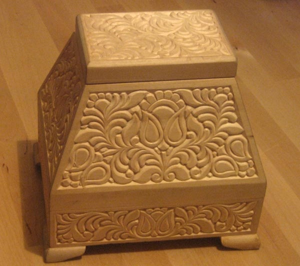
Мал. 35. Вирізання композиції.
Також на цій стадії підбираються всі огріхи надрізання. Всі задирки, залишки і обривки волокон повинні бути зрізані і видалені з усіх закутків і вузьких місць навколо візерунка. Він повинен чітко і чисто виступати з поглибленого фону.
Ті місця всередині візерунка, де не вистачило діаметра стамески для завершення наколки, необхідно прорізати ножем і зрізати фаски.
Потім починається сама клопітка частина роботи – зняття фасок. Чим більше знято фасок на елементі різьби, тим він більш опуклий і привабливий, тим багатшим виглядає візерунок в цілому. На цій стадії ретельно обробляється ножем кожен елемент візерунка: зрізують гострі ребра, закруглюють обриси не тільки деталей візерунка, а й фону.
Особливо гарним вважається, коли фаска знята тонко і як би неперервна на всьому елементі пальчика, листочка, завитка.
У кінцевому підсумку всі контури різьби повинні бути м'яко закругленими без різких граней. Весь візерунок як би тоне, продавлює, навколишній фон. Звідси і назва – фон подушки .
Наступна заключна стадія – нанесення порізок. Для кращого читання декоративного візерунка необхідно нанести останніелементи – дрібні деталі візерунка. Для Кудринського різьблення, це насамперед насічка, на деяких елементах різьблення у вигляді «сітки» з хрест-навхрест завданих поглиблень контурними штрихами: на серединках квітів та інших деталей, а також прожилки на листі.
Порізки виконуються ножем. Іноді для декоративних цілей застосовують самі дрібні напівкруглі стамески у вигляді ямочок, дужок та ін.
До оздоблювальних операцій належать: шліфування різьбленої поверхні, тонування її морилкою і нанесення прозорого захисного покриття. За традицією Кудринське різьблення, виконане головним чином на світлій липі, тонують в різні відтінки коричневого кольору, імітуючи цінні породи деревини. Попередньо дрібнимнаждачним папером з різьбленої поверхні видаляють сліди розмітки, олівцеві помітки та інше. Потерті в процесі роботи місця також очищають дрібнимпапером. Під покриття морилкою поверхня повинна бути максимально чистою, інакше вона не вийде рівною, а залишки розмітки будуть просвічувати через прозорий шар оздоблення. За традицією після висихання морилки виріб знову обробляють дрібною шкіркою. На цей раз вишліфовують тільки різьблений візерунок, що надає йому великої виразності, за рахунок гри граней фасок і прояви дрібних деталей насічок. Потім вся поверхня покривається лаком або натирається воском. Лак наноситься ватно-марлевим тампоном тонким шаром у кілька прийомів. За допомогою тампона лак потрапляє тільки на виступаючі поверхні. Виходить чудове поєднання блискучого візерунка з глибокими матовими проміжками. Можна зберегти і природний колір дерева і не тонувати його, але щоб захистити виріб від пилу і вологи, необхідно обов'язково нанести захисний шар лаку або воску.
Виконання рослинних елементів в плоско-рельєфному різьблення.
Елемент плоско-рельєфного різьблення «ромашка»
Для виконання цього елементу використовують ножі-косяки зі кутом скосу 35° і 45°, круті напівкруглі стамески діаметром 5-8 і 10-14 мм, пологі стамески шириною 12-18 мм, липову дошку розміром 200x100x20 мм.
Циркулем на дошці креслять коло діаметром 50 мм, розташувавши його від країв дошки не менше ніж на 20 мм.
Для того, щоб вирізати серцевину «ромашки», беруть круту напівкруглу стамеску діаметром 10-14 мм. Стамеску ставлять в центр кола строго вертикально до поверхні дошки; натиснувши, заглиблюють її на 2 мм і повертають навколо власної осі (мал. 36).
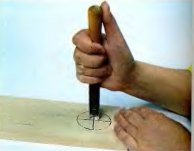
Мал. 36. Початок роботи над серцевиною «ромашки».
Увага! Не можна заглиблювати стамеску при цій операції більш, ніж на 2 мм, оскільки може відбутися сколення серцевини «ромашки».
Для отримання більш випуклої серцевини «ромашки» дві останні операції (показані на мал. 36 і 37) слід повторити мал.38.
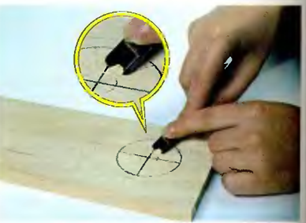
Мал. 37. Видалення матеріалу навколо серцевини «ромашки».
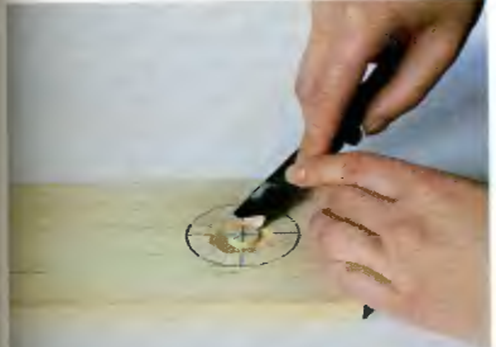
Мал. 38. Збільшення рельєфу серцевини ромашки.
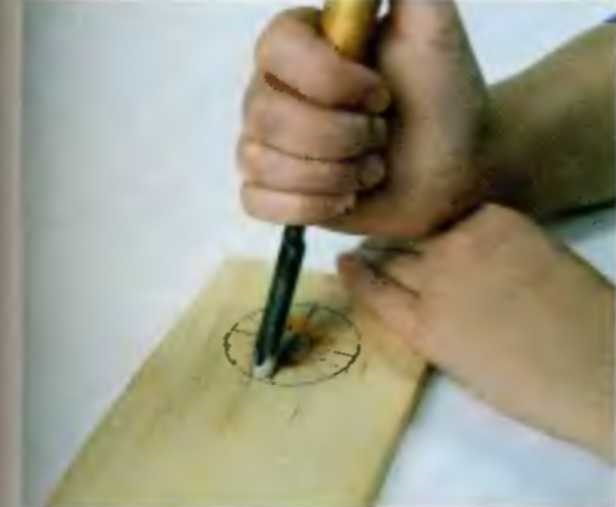
Мал. 39. Виконання надрізування краю пелюстки ромашки.
Для прорізання країв біля пелюсток «ромашки» беруть круту напівкруглу стамеску діаметром 7 або 8 мм.
Орієнтуючись на край кола, ставлять стамеску до площини дошки під кутом 70-85°. Лезо стамески направляють від центру кола майбутньої «ромашки» (мал. 39). Краї «ромашки» прорізають послідовно біля кожної пелюстки на глибину 3-4 мм. У кутках не повинно бути зазорів і перехресть.
Потім переходять до формування пелюсток «ромашки». Для точнішого виконання цієї операції їх розмітку роблять олівцем.
Кожне двогранне заглиблення між пелюстками виконують ножем-косяком з кутом скосу 35-45° двома надрізами, спрямованими назустріч один до одного під кутом 45-60° до площини дошки (мал. 40 і 41), воно повинне співпадати із заокругленими краями «ромашки» в місцях стикування стамесок. Потім кожну пелюстку обробляють остаточно, тобто їхню поверхню формують двома проходами крутою
напівкруглою стамескою діаметром 5-6 мм.
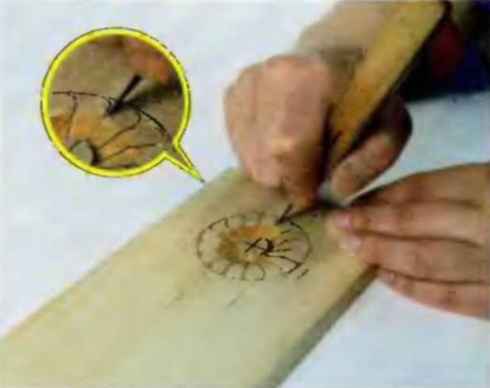
Мал. 40. Двогранне заглиблення між пелюстками (1-ша надрізка).
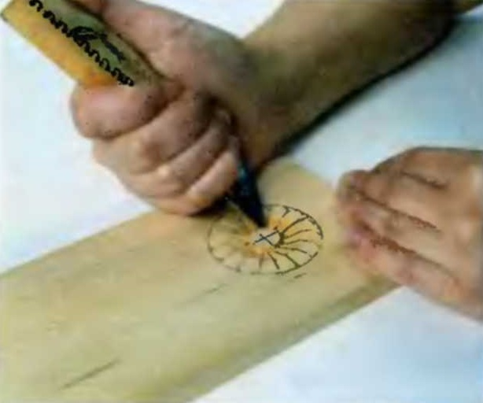
Мал. 41. Двогранне заглиблення між пелюстками (2-га надрізка).
Для цього стамеску ставлять до зовнішнього краю пелюстки під кутом 20-30° до площини дошки. Захоплюючи матеріал на половину ширини пелюстки, ведуть стамеску до серцевини «ромашки» (мал. 42).
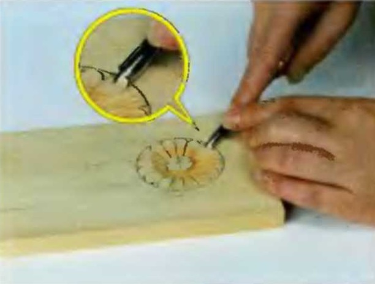
Мал. 42.Обробка пелюсток (1-й прохід).
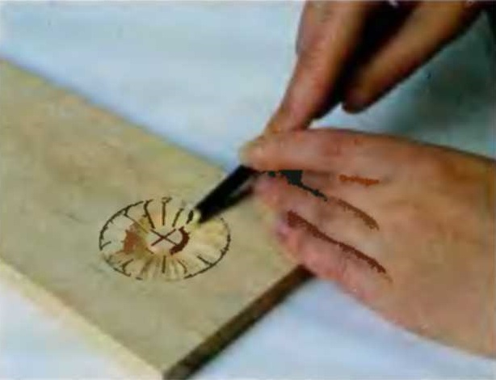
Мал. 43.Обробка листків (2-й прохід, рух до центру ромашки
з захватом другої половини пелюстки).
Другу половину пелюстки вирізають аналогічним чином (мал. 43). Якщо всі операції виконані вірно, то пелюстки виходять з
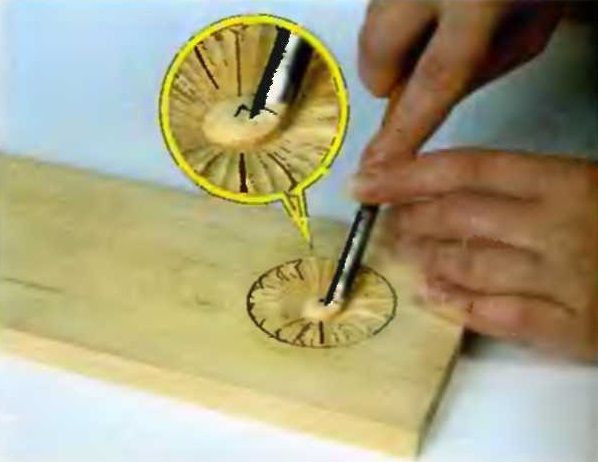
Мал. 44. Заокруглення серцевини ромашки.
виступаючою жилкою посередині.
Серцевину «ромашки» округляють напівпласкою стамескою шириною 12-18 мм, тримаючи її опуклою стороною вгору (мал. 44, 45).
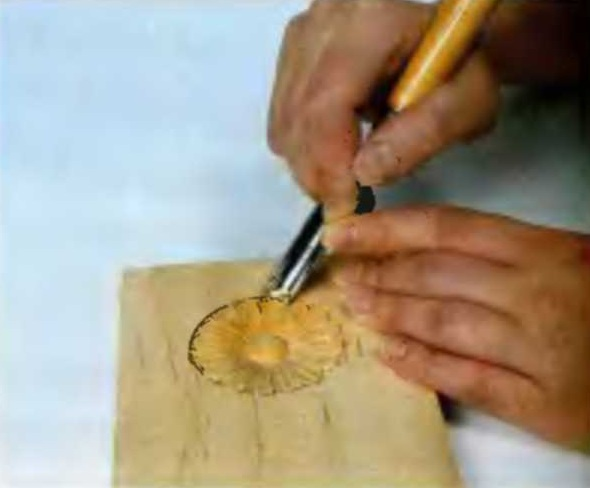
Мал. 45. Видалення матеріалу навколо ромашки.
З елементу «ромашка», використовуючи повтори, а також у поєднанні з іншими елементами, можна створити цілісний красивий орнамент. Мова йде про такі елементи рельєфного різьблення як «гілка з заокругленими листочками».
Елемент «гладке листя» навколо «ромашки»
Навколо «ромашки» знімають матеріал напівпласкою (пологою) стамескою на товщину попереднього підрізування пелюсток (3-4 мм) у напрямку до пелюсток. Кут стамески до площини дошки має бути 15-25° (мал. 46).
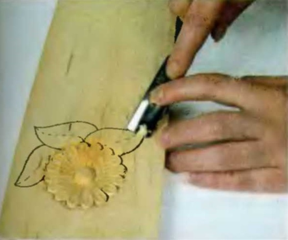
Мал. 46. Початок вирізання 1-ї половини листка.
Увага! Цю операцію необхідно виконувати з максимальною акуратністю для того, щоб не пошкодити краї пелюсток «ромашки».
Після цього навколо «ромашки» малюють листя. Перед формуванням листя додатково заглиблюють підрізку країв пелюсток «ромашки»на 3 мм, суворо по пройденому сліду і під тим самим кутом до площини, тобто так, як показано на мал. 39.
Кожен лист формують за два різа стамескою. Спочатку вирізають суміжну до «ромашки»сторону. Пологу широку стамеску ставлять до кінчика листа під кутом 15°-25° до площини дошки (мал. 46).
Під час вирізання половинки листка стамеску ведуть плавно під одним і тим самим кутом до площини дошки. Кути стамески при різьбленні повинні знаходитися над поверхнею матеріалу і можуть бути поглиблені тільки при завершенні операції – при стиковці з надрізкою краю «ромашки» (мал. 47).
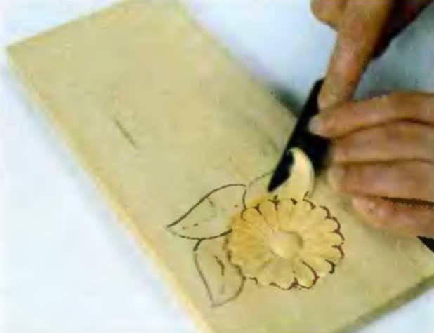
Мал. 47.Завершення вирізання 1-ї половини листка і стикування
з надрізкою краю.
Другу половину листа вирізають аналогічно: стамеску серединою ріжучої
кромки знову приставляють до кінчика листа під тим же кутом – 15°-25° до
поверхні дошки і ведуть до краю «ромашки» (мал. 48).
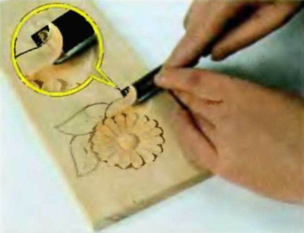
Мал. 48.Вирізання2-ї половини листка до стику з надрізаним краєм ромашки.
Край і форму листка формують надрізанням ножем-косяком по контуру під кутом
45-60° до площини дошки. Кінчик ножа має бути направлений від листка.
Глибина різання 3-4 мм (мал. 49).

Мал. 49.Виконання надрізки ножем-косяком по контуру листка
Матеріал навколо листка знімають пологою стамескою або ножем-косяком на глибину приблизно 3 мм. Потім заглиблюютьпідрізуванням навколо листка. Ніж-косяк ставлять під кутом 45°-60° до поверхні дошки. Кінчик ножа направляють під листок і роблять підрізування на глибину 3-4 мм. Край листка повинен мати певну товщину (фаску). Вона може бути різної величини залежно від розміру листка. У запропонованому варіанті фаска повинна складати 1-2 мм. Підрізування «під листок» додає різьбленню витонченості. Листя, «відірване» один від одного, виглядає реалістичніше. Додаткові тіні, що утворюються, додають різьбленню об'єм. Підрізування «під листок» не є обов'язковою операцією, її виконують за бажанням.
Все наступне листя вирізають аналогічно першому, але широку пологу стамеску при формуванні поверхонь листочків ведуть не тільки до «ромашки», але і до краю раніше вирізаного листка.
Гладку поверхню листка можна прикрасити різними способами. До них відносяться: насічка стамескою, різання ножем-косяком по поверхні листа, трикутні виїмки по краю листочка та інші.
При обробці поверхні листя можна використовувати круту напівкруглу стамеску діаметром 4-6 мм. Стамеску ставлять випуклою стороною вниз до краю вирізаного листа під кутом 15-25° до площини дошки і під кутом осі інструменту до середньої жилки листка аркуша (мал. 50).
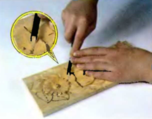
Мал 50. Обробка поверхні гладкого листя
Інструмент ведуть плавно, захоплюючи матеріал на глибину 2-3 мм. Куточки стамески по всій довжині різа повинні залишатися над поверхнею дошки. Спочатку ведуть стамеску до середньої жилки листа з невеликим поворотом, а далі – паралельно їй.
Обробку по краю листка у вигляді «зубчиків» виконують ножем-косяком. Для утворення «зубчика»першу надрізку роблять паралельно гребням, що утворилися від стамески, а другу – під кутом 30°-45° до першої надрізки (мал. 51).
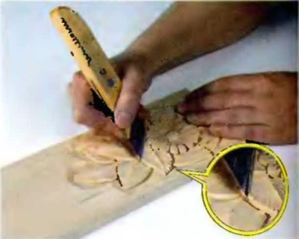
Мал. 51. Формування зубців ножем- косяком.
Також можна прикрасити поверхню листа насічками пологою стамескою, шириною 12-18 мм. Її проводять під кутом 70°-90° до поверхні дошки на глибину 1-2 мм (мал. 52).
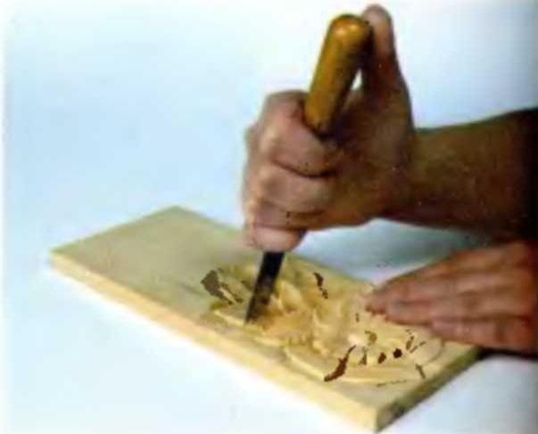
Мал. 52. Надрізання по поверхні листка
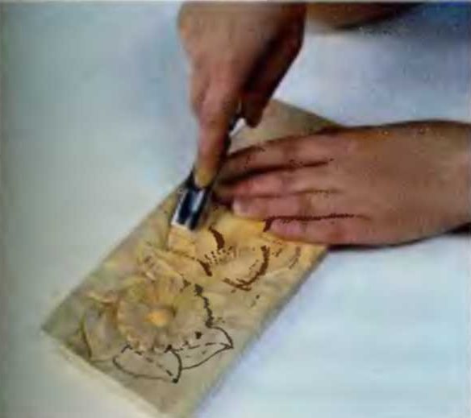
Мал. 53. Підрізування по поверхні листка пологою стамескою.
Після цього тією ж пологою стамескою роблять підрізування назустріч тій, що є на лінії надрізки (мал. 53).
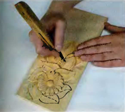
Мал. 54. Надрізка ножом-косяком поповерхні 1-ї половини листка(1-й різ) Також за допомогою ножа-косяка можна зробити різання по поверхні листа. Зазвичай цю операцію виконують ножем-косяком, у якого кут скосу складає 35° за 2 різа назустріч один одному (мал. 54 і 55).
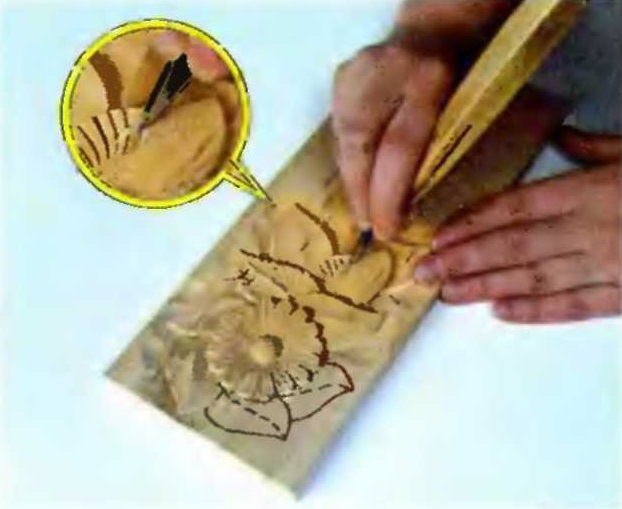
Мал. 55. Підрізка ножем-косяком по поверхні 1-ї половини листа (2-й різ.)
Роблячи ножем-косяком довільнукількість різів назустріч один одному,таким же чином, як це було описановище, виконують обробку по всій поверхні листка, спочатку на одній його половині (мал. 54 і 55), а потім на другій (мал. 56).
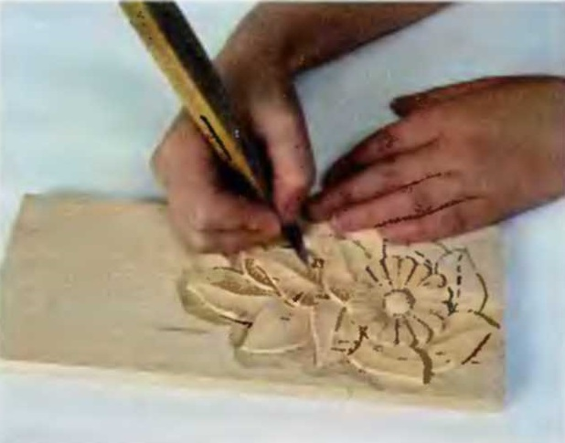
Мал. 56. Підрізка ножем-косяком по поверхні 2-ї половини листка.
Всі вищеописані операції різання ножем-косяком (мал. 54-56) зручніше робити по напряму від середньої жилки листка до його країв.
Елемент «ромашка» у поєднанні з елементами «гладке листя» і «гілочка із закругленими листочками» використовують для прикрашання виробівхатнього начиння, шпильок, скриньок, письмових наборів і т. і. (мал. 57).
Елемент "гілочка із заокругленими листочками"
Ця гілочка в графічному зображенні повністю повторює форму гілочок Кудринського різьблення, але в техніці виконання є невелика відмінність. У Кудрінському різьбленні залишається не вирізаною частина площі листочка, яку надалі заокруглюють або вона може бути зашліфована.
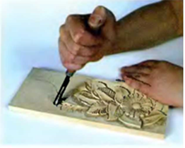
Мал. 57. Надрізання стамескою по краю листочка
У нашому варіанті вирізають всю поверхню пальцеподібного листочка, а гострі грані не заокруглюють, що утворилися, і не шліфують.
Напівкруглою (крутою) стамескою діаметром 4-7 мм роблять надрізки по краях листочка на глибину 3-4 мм, поставивши стамеску під кутом 45°-70° до площини дошки.
При цьому лезо має бути спрямоване від середньої лінії гілочки і від
майбутнього листочка (мал. 57).
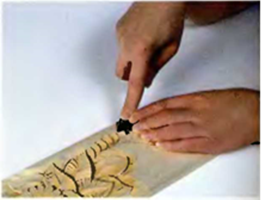
Мал. 58. Захоплення матеріалу коло краю листка
Потім пологою стамескою 12-20 мм вирізають поверхню листочка. Для цього ставлять стамеску на край листочка, направивши лезо до середини гілочки. Кут нахилу інструменту до площини дошки складає 15°-25°. Матеріал захвачують серединою леза стамески (мал. 58).
Вирізаючи поверхню листочка, стамеску повертають лезом назустріч наявній надрізці з одночасним обертанням інструменту навколо власної осі (мал.59).
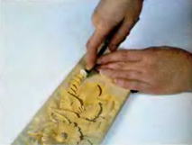
Мал. 59. З’єднання підрізок
Після цього ножем-косяком формують край листочка (мал. 60).
Для цього інструмент розташовують під кутом 45°-70° до площини дошки.
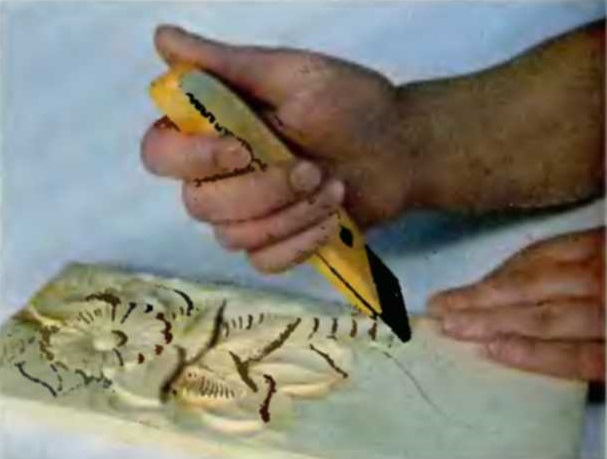
Мал. 60. Надрізка ножем-косяком по краю вирізаного стамескою листка
Кінчик ножа ставлять в середину гілочки в напрямку від листочка (пізніше листочок залишиться вищим).
Ніж-косяк поступово заглиблюють в деревину на 0,5 мм на початку різа, потім на 2-3 мм в середині і до 4 -5 мм в кінці біля краю листочка. Ніж ведуть точно до стику надрізок, які були виконані крутою стамескою по краю гілки.
Надрізи ножем-косяком за формою листочка, що мають крутий вигин, роблять з
високо піднятою над поверхнею дошки п'ятою ножа-косяка, тобто працюють
кінчиком ножа.

Мал. 61. Формування листків, краї якихпіднутрені під велике гладке листя
При такому положенні легко зробити витончений, чистий зріз, але і можна легко зламати кінчик ножа. Це може відбутися при зміні кута різання під час виконання елементів, коли інструмент затиснутий в матеріалі. Уникнути псування інструментуможна
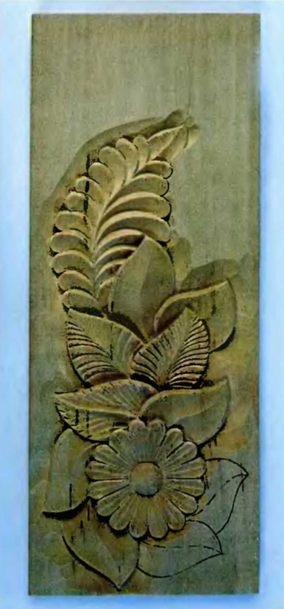
Мал. 62. Загальний вигляд дошки
тільки акуратним поводженням з ним.Листочки на гілочках, краї яких прибрані під інші елементи (наприклад, під гладкий великий лист), вирізають пологою стамескою або косяком від середини гілочки до краю. При цьому кут стамески або кінчик косяка в глибині матеріалу повинен точно стикуватися з наявною надрізкою. У починаючих різьбярів ця операція виходить не завжди, оскільки при її виконанні не видно стикування на всій протяжності різа (мал. 61).
Зрештою поєднання елементу "ромашка" з іншими елементами рельєфного різьблення виглядають так, як це показано на мал. 62.
Вищезазначені елементи використовуються для прикрашання різних виробів ужитку таких, як вази, набори для спецій, скриньки і т. д.(мал. 63)
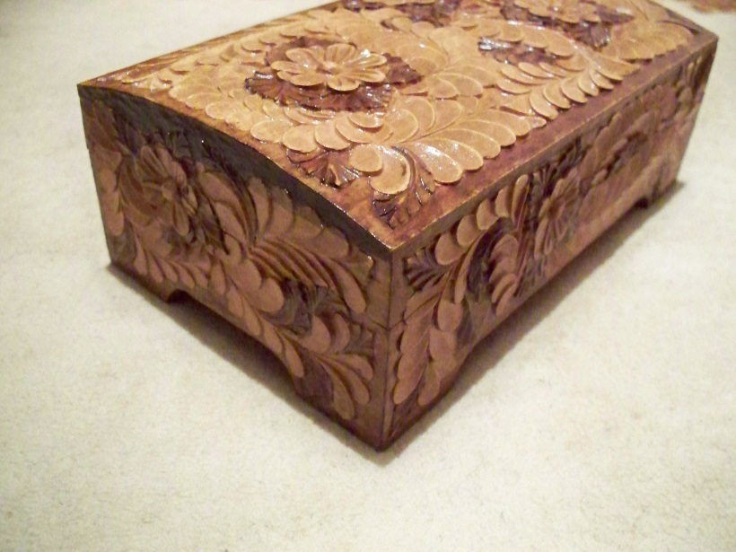
Мал. 63. Скринька
Елемент плоско-рельєфного різьблення "метелик"
Перше надрізання по контуру малюнка "метелика" проводять ножем-косяком з кутом скосу леза 35°або 45° на глибину 3-4 мм (мал. 64).
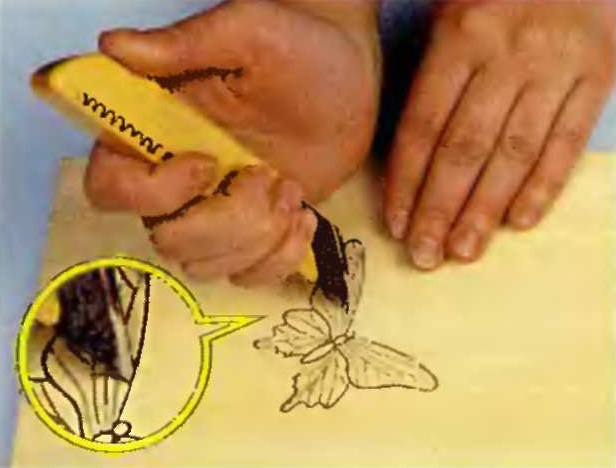
Мал. 64. Надрізання по контуру малюнка «метелика»ножем-косяком
Кінчик ножа-косяка має бути направлений від малюнка "метелика". Кут нахилу ножа до площини дошки - 60°-80°. На вигинах малюнка надрізку роблять стамескою (мал. 65).
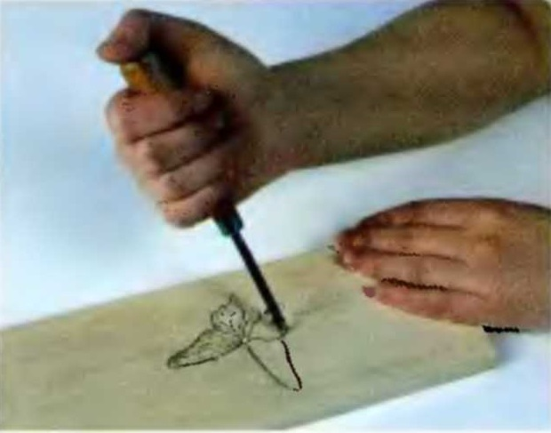
Мал. 65. Надрізання вузькою відлогою стамескою по контуру
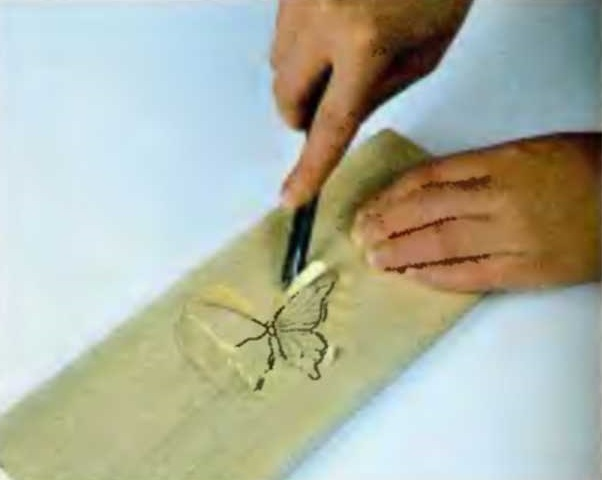
Мал. 66. Підрізання матеріалу по контуру
Матеріал навколо "метелика" видаляють на глибину першої надрізки. Роблять вибірку деревини ножем-косяком або пологою (напівпласкою) стамескою шириною 12-18 мм. Матеріал знімають на відстані не менше 1 см з усіх боків від "метелика" і на глибину 3-4 мм (мал. 66)
Вибравши матеріал, приступають до формування тільця "метелика". Починають
надрізки по контуру малюнка тільця ножем-косяком з кутом скосу 35°, під
кутом 70°-80° до площини дошки.
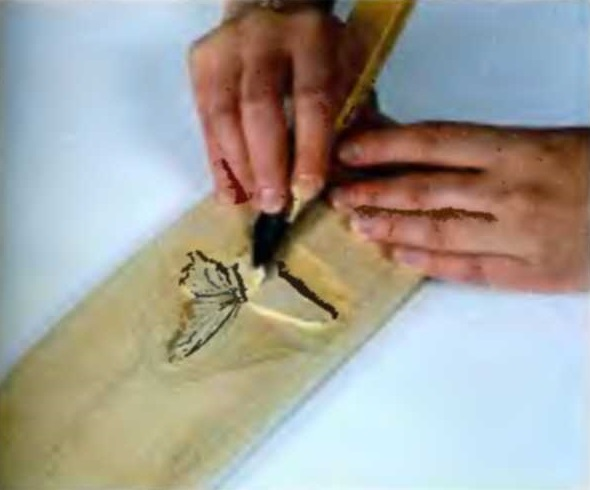
Мал. 67. Видалення матеріалу навколо метелика
Кінчик ножа має бути направлений від середини "метелика". Глибина різа - 1,5-2 мм.
Надріз тіла "метелика" можна проводити, розташувавши ніж суворо вертикально до площини дошки. Це забезпечить менше спотворення малюнка при вирізуванні дрібних деталей. Проте користуватись цим способом рекомендується після набуття певного досвіду в роботі.
Матеріал навколо тіла "метелика" вибирають ножем-косяком або пологою стамескою шириною 12-18 мм на глибину 1,5-2 мм з особливою точністю, відступивши від його тільця 5—10 мм. Матеріал знімають у напрямі до середини метелики (мал. 67 і 68).
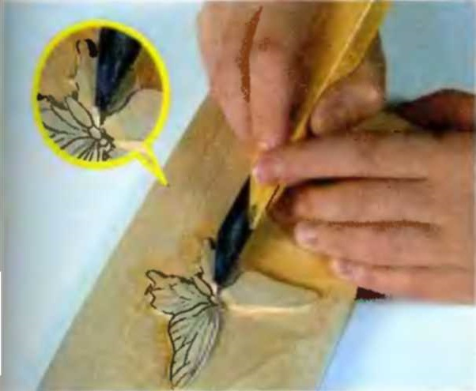
Мал. 68. Видалення матеріалу коло тіла метелика
Поверхню тіла "метелика" округляють ножем-косяком або вузькою пологою стамескою шириною 5-6 мм, тримаючи її опуклою стороною вгору.
Увага! Малюнок на крилах "метелика" слід періодично відновлювати після
того, як зрізуєте матеріал.
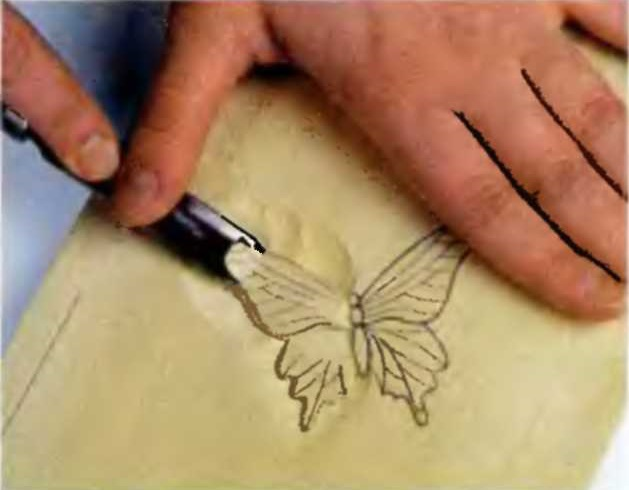
Мал.69. Формування крила метелика
Це дає можливість не спотворювати форму "метелика" в процесі різьблення.
Поверхню крила "метеликів" роблять скошеною до середини її тельця. Для цього матеріал зрізують ножем-косяком з кутом скосу леза 35°-45° або пологою стамескою шириною 12-18 мм (мал. 69) в напрямку від краю крила до тільця "метелика" (при цьому поверхня стає трохи увігнутою).
Деревину на поверхні крила знімають без різких переломів. Краї крил залишають максимально високими (матеріал по можливості не знімати).
Кожне крило "метелика" складається з двох частин. Нижню частину опускають за тією ж технологією, що і у разі виконання підрізування по контуру "метелика", але глибина має бути менше - 3 мм (мал. 67 і 68).
Малюнок "жилок" на крилах "метелика" наносять олівцем, а потім вирізають ножем-косяком двома різами, спрямованими назустріч один одному або стамескою-кутиком(мал. 70)
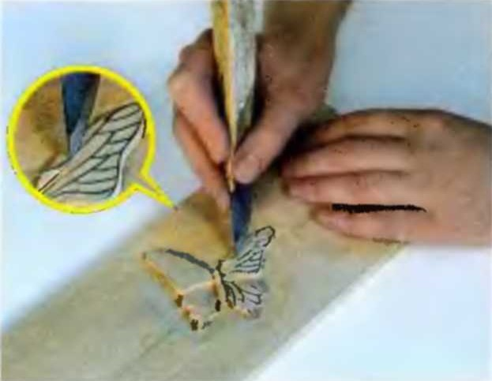
Мал. 70. Вирізання жилок на крилах метелика
Зробивши вищеописані операції, поглиблюють підрізання ножем-косяком по контуру "метелика", але вже в напрямку під малюнок, тобто кінчик ножа має бути спрямований під "метелик" аналогічно тому, як при підрізуванні гладкого листя.
При такому підрізуванні стежать за тим, щоб товщина "метелика" залишалася 2-3 мм. Іншими словами, його край має мати фаску шириною 2-3 мм (мал. 71).
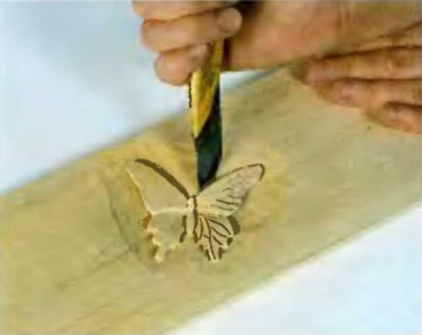
Мал. 71. Піднутрення контуру метелика
Елемент "метелик" добре поєднується з елементом "гладке листя". Велике "гладке листя", розташоване навколо "метелика", вирізають пологою стамескою шириною 12-18 мм (мал. 72).
Мал. 72. Загальний вигляд метелика
Кожен листок вирізають за два проходи інструменту аналогічно тому, як при виконанні елементу "гладке листя" навколо "ромашки".
У поєднанні з іншими елементами рельєфного різьблення, "метелик" служить прикрасою таких виробів, як скриньки, декоративні тарілки і так далі (мал. 73).
Мал. 73 Декоративна тарілка
Контрольні питання і завдання:
- Що входить в поняття підготовчі роботи до оздоблення плоско-рельєфним різьбленням.
- Характеристика інструменту для плоско-рельєфного різьблення.
- Заточка і правка інструменту для плоско-рельєфного різьблення.
- Допоміжний інструмент для плоско-рельєфного різьблення.
- Поясніть техніку виконання елементу:
- "ромашка"
- "гладке листя" навколо "ромашки"
- "гілочка із заокругленими листочками"
- "метелик"